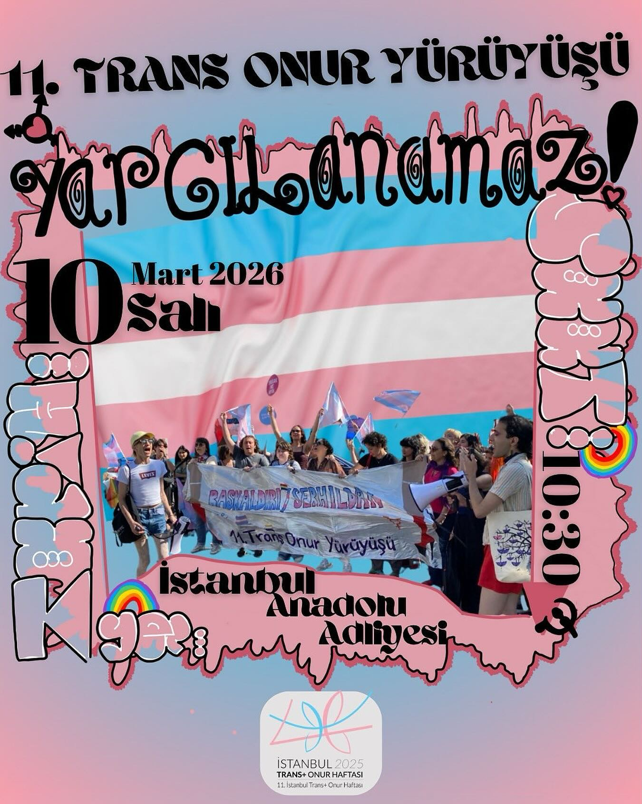

2025-07-31 13:10:00
Tüm hak savunucularına duyurumuzdur: DAVAMIZ VAR
22 Haziran’da Başkaldırı temasıyla Acıbadem’de gerçekleştirdiğimiz 11.Trans Onur Yürüyüşü günü 42 arkadaşımız işkenceyle gözaltına alındı. Bir çok arkadaşımız yürüyüş yerinden farklı yerlerde sırf LGBTİ+ olduğu, saçı renkli, küpesi olduğu, kıyafetinden ötürü gözaltına alındı. Basın emekçileri sırf bizi çekmesin diye özel olarak hedef alındı. Bugün, 36 arkadaşımıza 2911’den dava açıldığını öğrendik hızlı olduğunuzu düşünüyorsunuz ama her şey ortada 🫦
Yürüyüş rotasına sızmanıza ve Acıbadem’in neredeyse her sokağında bizi aramanıza rağmen nasıl çatlaklardan sızdık? Nasıl birbirimizi yine gülüşlerimizde bulup toplandık? İşten tam da bundan güç alıyoruz ve sizden korkmuyoruz
10 Mart 2026 Salı günü saat 10.30’da İstanbul Anadolu Adliyesi’nde ilk duruşma gerçekleşecek. Davayı sahiplenmek için herkesi bekliyoruz. Ne basın açıklamalarımız ne trans onur yürüyüşlerimiz ne de varoluşumuz suçtur. Transfobik hukukunuz, bekçiniz, polisiniz, yasaklarınızdan güçlüyüz, bizi yenemezsiniz. Kolay değil.
Yargılanan arkadaşlarımızın yanındayız.
